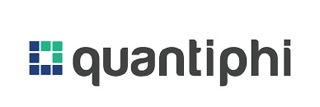

Harshak Parmar
I am passionate about data-oriented roles, from Data Analyst to Data Scientist, where I can handle the entire data pipeline process, including ETL. My journey is driven by a deep love for working with data, extracting valuable insights, and crafting innovative solutions that drive business impact
A brief description of my Projects and Internships
I'm excited to share my experience as a Data Scientist and Software Engineer, where I have gained good experience in data-driven solutions and software optimization. Having experience with machine learning, NLP, and software development, I have delivered effective projects that deliver performance improvements and business value.
From developing successful machine learning models to architecting scalable software solutions, my experience spans a variety of technologies including Python, SQL, TensorFlow, and BigQuery. I enjoy solving complex problems and consistently looking for innovative solutions in fields like NLP and Blockchain.
Have a look at my portfolio to see how I've applied these skills to real-world problems. Let's connect and talk about how we can work together!
👨🏻💻Work Experience👨🏻💻
1. ADT Security Services Inc | Data Scientist
Boca Raton, FL, USA
Led end-to-end development of customer propensity modeling.
Engineered 50+ features from customer interaction data.
Implemented ensemble models achieving 85% prediction accuracy.
Resulted in 200% increase in email CTR and $150K annual savings.
Deployed model serving 100K+ customers monthly.
----------------------------------------------------------------------------------------------------
Skill Gained: Data Analysis, Machine Learning, Feature Engineering, Model Deployment
Tools Used: Python, BigQuery, SQL, Tableau, Ensemble Models

2. Quantiphi Analytics Solution (Data Engineer Intern)
Bangalore, India
Led successful analysis and management of an extensive data set encompassing 4,000,000+ entries, with a sharp focus on optimizing Export and Import processes.
Effectively employed Snowflake to seamlessly load data into designated tables during the staging process, establishing a robust connection with Informatica that resulted in a notable increase of 60% in data processing speed.
Employed Informatica’s ETL process to rectify data inconsistencies, increasing efficiency by 50%.
Seamlessly connected transformed data to Tableau, elevating performance by 30%, showcasing my prowess in
optimizing processes and data integration.
----------------------------------------------------------------------------------------------------
Skill Gained: Data Analysis, Extract Transform Load (ETL), Data Visualization, Data Warehousing, Cloud Computing, AWS
Tools Used: Tableau, Excel, Snowflake, Informatica, EC2(Elastic Compute Cloud), S3(Simple Storage Service), IAM(Identity and Access Management), Amazon ElasticCache
3. Microsoft Research India, Narendra Summer Intern Scholar at the IISC(Indian Institute Of Science), Bengaluru, India
Crafted an innovative solution for conducting auctions, eliminating the need for a trusted setup, thereby enhancing security and transparency
Introduced a groundbreaking concept: a Blockchain-based bulletin board, surpassing existing decentralized alternatives in efficiency by an impressive 220%
Skills Gained: Ethereum 2.0 (The Megre), Consensus Mechanisms (PoW, PoS)
3. ITC INFOTECH (NLP Intern)
Bangalore, India
Spearheaded Sentiment Analysis on customer data across distinct premium ITC hotel Data Sets, yielding valuable
insights.
Transformed a substantial 90% of the Data Set using advanced techniques, including Tokenization, Stop Word
Removal, Stemming, and Lemmatization, enhancing data quality and analysis.
Leveraged cutting-edge ML-based Algorithms like Logistic Regression and Multinomial Naive Bayes to attain an
impressive accuracy of 94%, significantly elevating the precision of sentiment prediction
.
----------------------------------------------------------------------------------------------------
Skill Gained: Use of Python based Notebooks, Sentiment Analysis, Word Embedding Techniques, Convulusional Neural Networks
Tools Used: Jupyter Notebook, Google Colaboratory, Excel
-
EHR SDoH Extractor
Led an NLP project to extract Social Determinants of Health (SDoH) from EHRs using GPT-3.5 for data augmentation.
Achieved 85.56% SDoH accuracy and 91.11% in adverse outcomes, outperforming GPT-4 Turbo benchmarks.
TECH STACK USED:
Go to Project
-
HelpingCops
Integrated mapping and weather services into police analytics, improving crime location accuracy by 70%.
TECH STACK USED:
Go to Project
-
EtherBridge Bank Efficient Ethereum Transactions
Developed a web application based on Blockchain technology.
The web application uses smart contracts written in Solidity as backend and web3.js as frontend along with HTML and CSS.
Any transaction initiated interacts in real time with the Rinkeby Test Network, and a gas fee is charged.
TECH STACK USED:
Go to Project
-
PhishBuster URL Safeguard
Explored different links, both good and malicious and concatenated them into a CSV file.
Trained the model using two Machine Learning Algorithms and compared the accuracy.
Worked on FastAPI for interfacing.
TECH STACK USED:
ML Models (Logistic Regression and Multinomial Naive Bayes)
Go to Project
-
MessageMeld Multichat Synopsis Generator
Used two methods to tackle the issue, one being the use of Seq2Seq model which is performed by the LSTM encoder and decoder.
Encoder-Decoder part was used as the input and output in a summary are of different lengths.
Second method is using the Huggingface transformer, which incorporates the pre-trained models.
TECH STACK USED:
Encoder Decoder Architecture
Go to Project
-
Blockchain based Bulletin Board
Developed a decentralized Bulletin Board, which interacts with the Ethereum test network.
Interface was built using React and Solidity was used to interact with the Ethereum smart contract.
TECH STACK USED:
Ethereum Rinkeby Test Network
Go to Project
-
Optimizing Gas Fees in Smart Contracts on Ethereum 2.0
Worked on exploring various ways in which the Gas Fees could be optimized for standard operations used while writing Smart Contracts, like effectively dividing numbers, declaring variables pre and post increments, etc.
TECH STACK USED:
Ethereum Sepolia Test Network
Go to Project
-
E-Mandi
A website where wholesalers could buy vegetables in bulk.
HTML and CSS were used for the designing of the website and JavaScript for form validation.
Xampp server's MySql as a database was used for storing data related to users (cart value, quantity of vegetables available, and mode of payment opted) and PHP as a backend to establish connection with the database and the front end.
TECH STACK USED:
SKILLS
Solidity
Metamask
Remix IDE
Web3
Python Libraries (Numpy, Pandas, Matplotlib, etc)
MS Excel
Tableau
Snowflake (Extract Transform Load (ETL))
SQL
Spark
Hadoop
Big Data
Data Lakes
Model Evaluation
Data Wrangling (Pandas)
Statistical Analysis
Python
Core Java
Solidity
JavaScript
HTML
CSS
scikit-learn
PyTorch
TensorFlow
Hugging Face
XGBoost
LightGBM
Keras
TensorFlow Extended (TFX)
BERT
GPT-3.5, GPT-4
T5
BERT
Deep Learning (CNN, RNN, LSTM, GANs, Autoencoders)
NLP (Text Classification, NER, Sentiment Analysis)
Time Series Analysis (ARIMA, SARIMA, Prophet)
Model Deployment (Flask, FastAPI)
AWS (EC2, S3)
GCP
Snowflake
Data Lakes
Git
GitHub
GitLab
Docker
Kubernetes